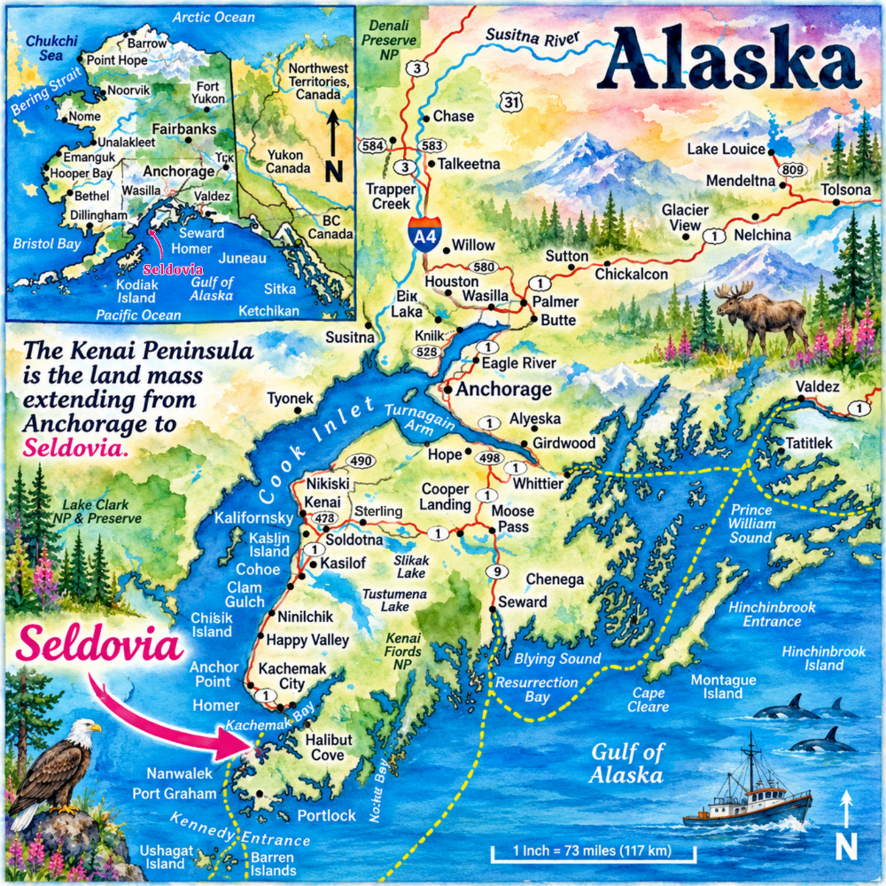

Back to the natural beauty of Alaska!
We invite you to a tranquil place where the majesty of glorious mountains, expansive sandy beaches and extensive trails lead you through lush forests and up to the mountain tops — where views of Cook Inlet will take your breath away. The only way to get to Seldovia is by air, passenger tour boats (summertime) or the Alaska Marine Highway ferry, which means you will be here on purpose, and you decided that the extra effort to get off the road system would be worthwhile. You will not be disappointed.
If you are out on our waters, you may often come across orca or humpback whales, many playful sea otters, puffins, and plenty of eagles — and of course the ordinary seagull who is fat with the plentiful salmon scavenging at the fish cleaning table at Seldovia's small boat harbor.
Be sure to visit our Webcams Around Seldovia to view live images from the small boat harbor, the city dock, and the docks across the bay. Thanks to those who sponsor those cameras and keep them live on the internet!
We know you will love the many incredible beauties of Seldovia: our breathtaking scenery, abundant wildlife, and authentic people!
Seldovia Map

Town Tour
Arriving in Seldovia
You'll arrive through the SOV Airport, the Seldovia Harbor, the AMHS Ferry Dock, or the Jakolof Bay Dock. Although there are no highways to Seldovia, you can bring your car to town on the M/V Tustumena ferry.
The Harbor
Seldovia's harbor is a vital link between work, recreation, and local access. Transient space is usually available for visitors — call the Harbor Master.
Main Street
Main Street parallels the waterfront and runs the full north-south length of town. We're very pleased to inform you there are no traffic lights in Seldovia!
Business Community
Seldovia has a nice mix of businesses supporting both the local community and the tourist trade. That said, we don't have banks, auto dealers, attorneys, movie theaters, or super stores.
Community Services
Seldovia is fortunate to have virtually all the basic services — water, sewer, power, phone, and internet — that a small community needs.
History of Seldovia
Seldovia has a rich history. The Seldovia Village Tribe holds a wealth of information about the history of our community, and we're grateful to have it available. For more historical and anthropological information about Seldovia and her people, visit the Seldovia Visitors' Museum, right off the small boat ramp on the corner of Main Street. Admission is complimentary.